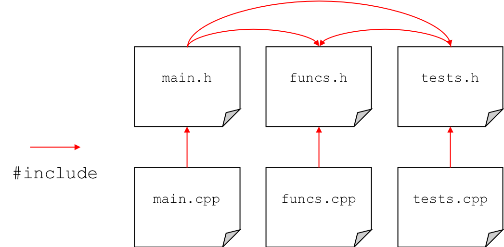
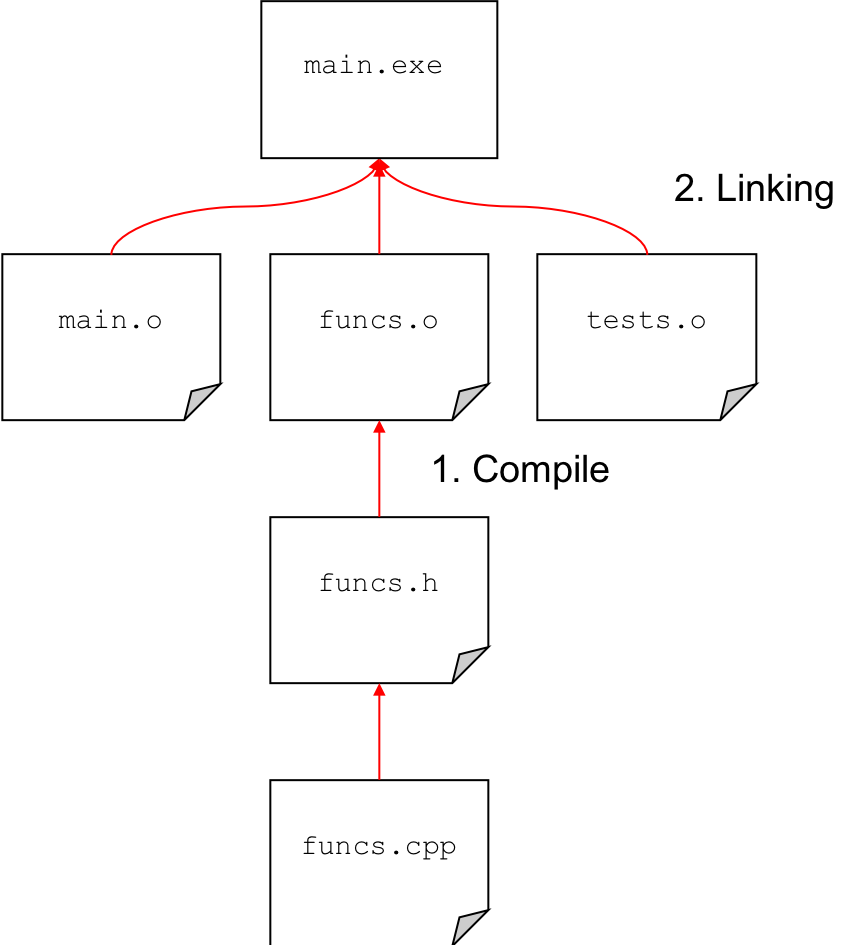

Up to this point we have focussed on simple unit tests and everything has been placed in one source file. However, this does not scale well to larger projects. We will now consider how to split up the main file, functions (or classes) and test functions.
The image below shows a suggested approach for larger projects. This is assuming more of a C-like approach in which a series of functions are placed in file separate from main(). However, it is equally applicable for classes in which each class will have its own tests defined in a separate file.

Note how the testing files must include the function header so that it can call the functions to test them.
When working with projects that span multiple files, it is sensible to use a makefile for compiling. It is possible to add in extra commands to a makefile so that you can specify a debug build.
Makefile
# Set compiler CC = g++ #Compile flags (-c to output object file .o) CFLAGS = -c -Wall -Wextra -Wpedantic -std=c++11 all: main.exe debug: CFLAGS += -DDEBUG -g debug: main.exe main.exe: main.o tests.o funcs.o $(CC) main.o tests.o funcs.o -o main.exe main.o: main.cpp $(CC) $(CFLAGS) main.cpp tests.o: tests.cpp $(CC) $(CFLAGS) tests.cpp funcs.o: funcs.cpp $(CC) $(CFLAGS) funcs.cpp clean: rm *.o main.exe
We can see that there are now debug: commands in the makefile. When this command is used, it just adds in additional flags to be used for compiling and then tells it to build main.exe. Note the extra flags used for warnings. These are -Wextra and -Wpedantic. These just tell the compiler to be extra pedantic when looking for potential problems with the code so we cna ensure we can as many problems as possible.
To build the project, we can simply type
make
or else
make all
If we wish to build the project using the debug configuration we can simply do
make debug
Note that if you then wish to build again and remove the debug, you will have to run
make clean
before you can re-build.
Note that you do not have to have all the source files to build the project, if you have the corresponding .o object files. For example, you may be working on a project in which you are required to write some functions. You are not involved in working on the main file and someone else has written the tests. You only need to modify funcs.h and funcs.cpp. Your team members may just provide you with main.o and tests.o. You can then focus on writing the functions and then only need to link to the provided object files. This ensures that you do not accidentally modify files you are not meant to be working on.

The makefile to enable the above is shown below.
# Set compiler CC = g++ #Compile flags (-c to output object file .o) CFLAGS = -c -Wall -Wextra -Wpedantic -std=c++11 all: main.exe debug: CFLAGS += -DDEBUG -g debug: main.exe main.exe: main.o tests.o funcs.o $(CC) main.o tests.o funcs.o -o main.exe funcs.o: funcs.cpp $(CC) $(CFLAGS) funcs.cpp clean: rm funcs.o main.exe